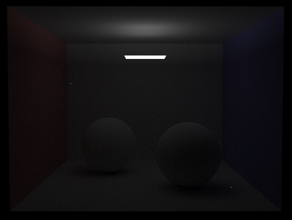

I extended the reference implementation of the Assigment 3 Path Tracer to include support for Bi-directional Path Tracing. Rays shot into the scene originate both from the camera and the light sources. After a certain number bounces each, the two types of Rays are made to connect. If a ray from the point where the camera path terminated is able to meet the light path without being occluded by other scene geometry, then the light path contribution is added to the total output radiance along that path.
Bi-directional Path Tracing is particularly useful for scenes where light from the light sources does not directly reach most of the scene geometry. Scenes like this rendered using simple Path Tracing techniques show a higher degree of variance as compared to solutions provided by Bi-directional Path Tracing.
To demonstrate this, I modified the Cornell Box with lambertian spheres so that the Area Light is smaller and is directed towards the ceiling. Only a small portion of the celing is directly illuminated. The rest of the scene is illuminated by indirect light bouncing off of the celing.
Here is an image renedred using the Assigment 3 Reference implementation using 6400 samples per pixel and with maximum Camera Ray Path Length 6.

Rendering Time : 4681.4274 s
In contrast, this is an image renedred using my Bi-directional implementation using 6400 samples per pixel, maximum Camera Ray Path Length 4 and Light Path length 2. There is visibly less noise (less variance) in the output image and overall, the scene is better lit.
Rendering Time : 4681.4274 s
How to Run
This remains mostly the same as it was for Assigment 3. I added an extra commandline option -n that lets you specify the maximum Light Path length. The -m option from Assigment 3 specifies the maximum Camera Path length. The dae file I modified, named 'CBspheres_lambertian_bidir_withlight.dae' is included in my handin directory.